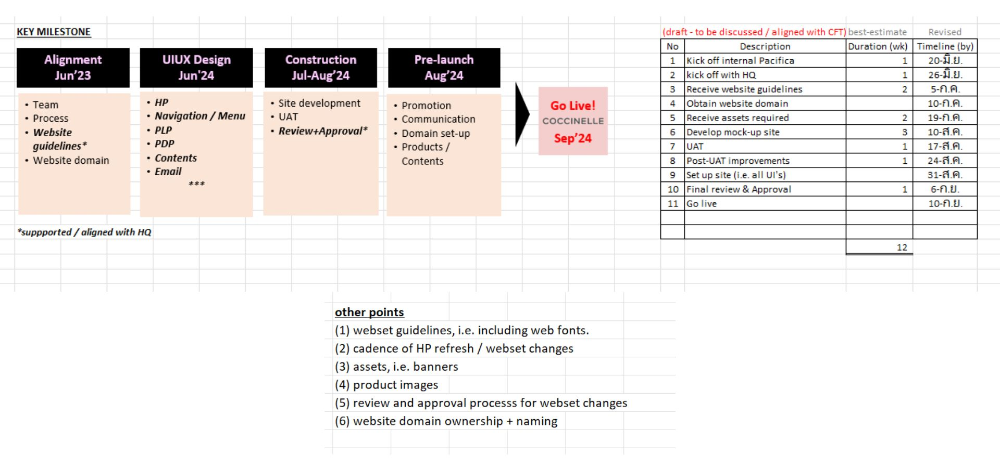
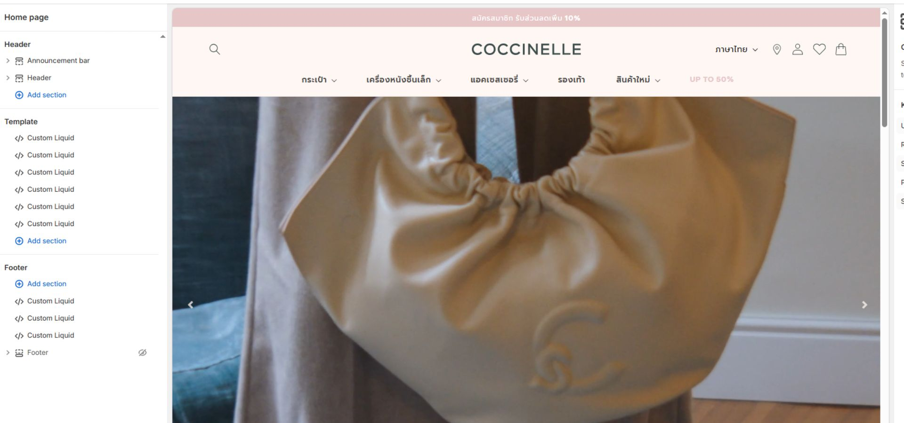
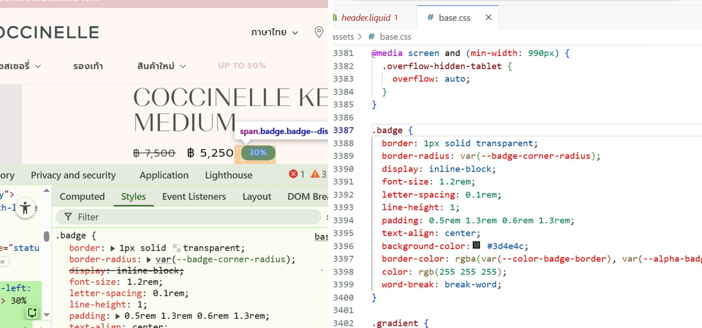

Shopify Technical Operations & Quality Assurance
Platform: Shopify · Role: Technical QA / Frontend Operations
I specialize in the end-to-end technical health of Shopify storefronts. Beyond development, I ensure
long-term stability through rigorous testing, performance monitoring, and rapid production support,
especially during high-stake marketing campaigns.
UAT & Quality Control Strategy

Systematic UAT process: Verifying edge cases before production launch.
- Led the UAT (User Acceptance Testing) cycle, identifying critical bugs in checkout
flows and payment integration.
- Developed Cross-Browser Test Plans to ensure 100% UI consistency across iOS, Android,
and Desktop.
- Performed Regression Testing after new feature releases to prevent side effects on
existing site functions.
- Collaborated with stakeholders to translate business requirements into technical test cases.
Production Stability & Monitoring

Real-time monitoring and technical health checks for live Shopify sites.
- Managed technical operations for 4–5 live stores, maintaining 99.9% stability during
peak traffic/flash sales.
- Conducted Performance Audits (Core Web Vitals) and optimized site speed to maintain
high conversion rates.
- Owned the Incident Management process for production issues involving API failures and
CMS glitches.
- Verified release safety for all third-party app integrations and custom Liquid code updates.
Technical Problem Solving

Debugging complex Liquid logic and ensuring data integrity.
- Investigated and resolved frontend-to-backend data issues in Shopify’s Liquid
templates.
- Optimized campaign landing pages for maximum load speed and mobile responsiveness.
- Performed emergency hotfixes during live campaign launches with a focus on zero-downtime.
Tools & Competencies
QA Testing
UAT
Regression Testing
Performance (Lighthouse)
Shopify Liquid
Incident Management
Responsive Debugging
Cross-browser Testing